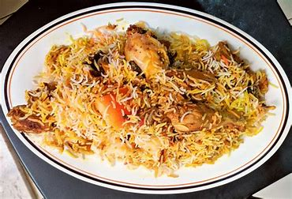
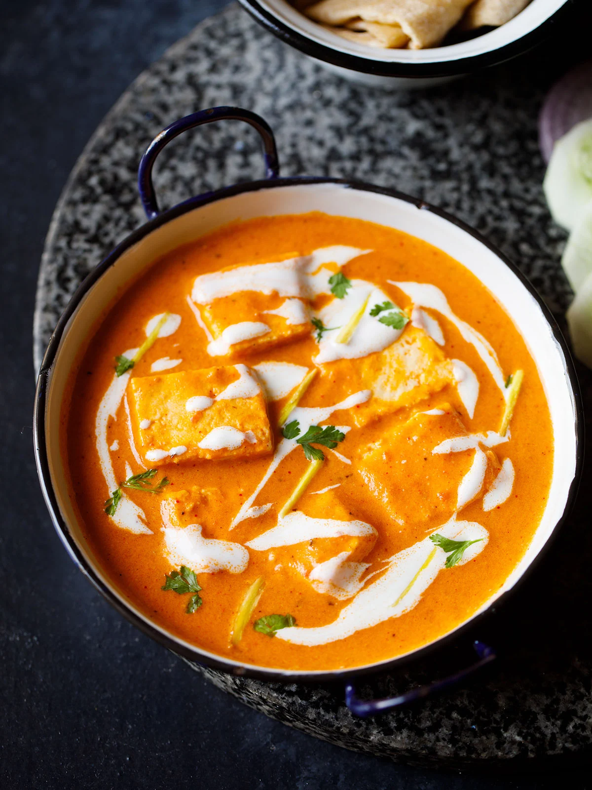
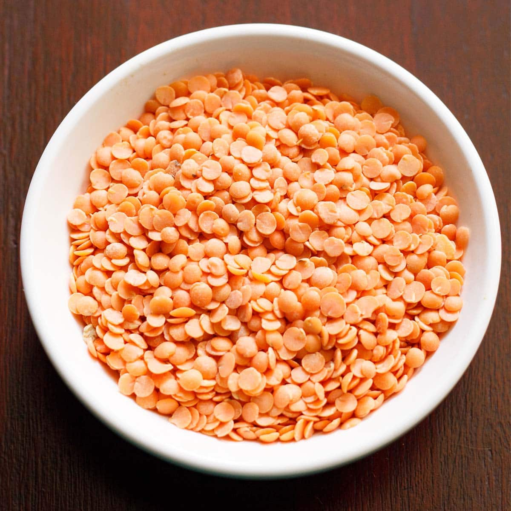
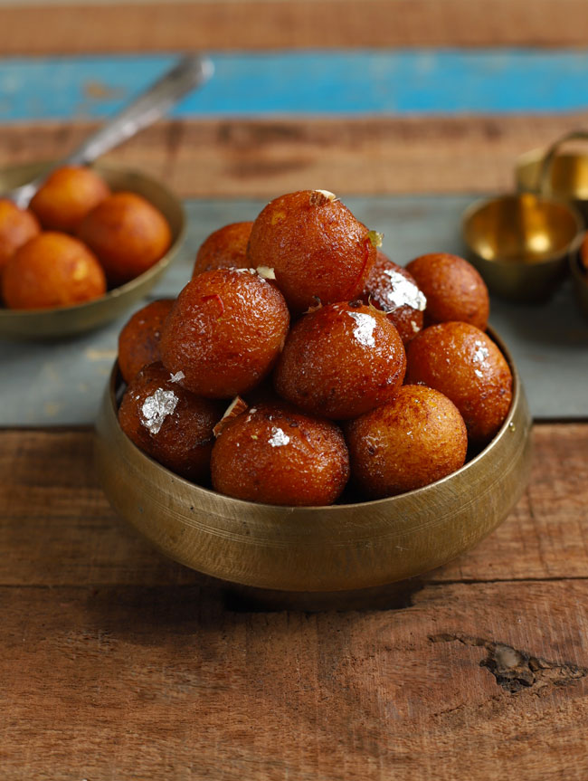

1. Chicken Biryani

Ingredients:
- 1 kg chicken, cut into pieces
- 2 cups basmati rice
- 4 onions, thinly sliced
- 2 tomatoes, chopped
- 1 cup yogurt
- 1 tbsp ginger garlic paste
- 1 tsp turmeric powder
- 2 tbsp biryani masala
- 1/2 cup chopped mint leaves
- 1/2 cup chopped coriander leaves
- Salt to taste
- 3 tbsp ghee
- 2 tbsp oil
Instructions:
- Marinate the chicken with yogurt, turmeric, ginger garlic paste, and biryani masala for at least an hour.
- Cook the basmati rice until 70% done and set aside.
- Heat oil and ghee in a large pot, fry the onions until golden brown.
- Add chopped tomatoes and cook until mushy.
- Add marinated chicken and cook until the chicken is tender.
- Layer the rice over the chicken mixture, sprinkle chopped mint and coriander leaves.
- Cover the pot with a tight-fitting lid and cook on low heat for 20-25 minutes.
- Serve hot with raita.
2. Paneer Butter Masala

Ingredients:
- 250g paneer, cubed
- 2 onions, finely chopped
- 2 tomatoes, pureed
- 1 tbsp ginger garlic paste
- 1/2 cup fresh cream
- 1/4 cup butter
- 1 tsp turmeric powder
- 1 tsp red chili powder
- 2 tbsp tomato ketchup
- 1 tbsp garam masala
- Salt to taste
- Fresh coriander leaves for garnish
Instructions:
- Heat butter in a pan and sauté onions until golden brown.
- Add ginger garlic paste and cook for 2 minutes.
- Add tomato puree, turmeric, red chili powder, and salt. Cook until oil separates.
- Add tomato ketchup and garam masala. Mix well.
- Add cubed paneer and fresh cream. Cook for 5-7 minutes.
- Garnish with fresh coriander leaves and serve hot with naan or rice.
3. Masoor Dal

Ingredients:
- 1 cup masoor dal (red lentils)
- 2 tomatoes, chopped
- 1 onion, finely chopped
- 2 green chilies, slit
- 1 tbsp ginger garlic paste
- 1/2 tsp turmeric powder
- 1 tsp cumin seeds
- 1 tsp mustard seeds
- 1/2 tsp red chili powder
- 2 tbsp oil
- Salt to taste
- Fresh coriander leaves for garnish
Instructions:
- Wash and soak the masoor dal for 30 minutes.
- Pressure cook the dal with turmeric powder and salt until soft.
- Heat oil in a pan and add cumin and mustard seeds. Let them splutter.
- Add onions and sauté until golden brown.
- Add ginger garlic paste and green chilies. Cook for 2 minutes.
- Add chopped tomatoes and cook until mushy.
- Add the cooked dal and red chili powder. Simmer for 10 minutes.
- Garnish with fresh coriander leaves and serve hot with rice or roti.
4. Aloo Gobi

Ingredients:
- 2 potatoes, peeled and cubed
- 1 small cauliflower, cut into florets
- 1 onion, finely chopped
- 2 tomatoes, chopped
- 1 tbsp ginger garlic paste
- 1 tsp turmeric powder
- 1 tsp cumin seeds
- 1 tsp coriander powder
- 1/2 tsp red chili powder
- 2 tbsp oil
- Salt to taste
- Fresh coriander leaves for garnish
Instructions:
- Heat oil in a pan and add cumin seeds. Let them splutter.
- Add onions and sauté until golden brown.
- Add ginger garlic paste and cook for 2 minutes.
- Add chopped tomatoes and cook until mushy.
- Add turmeric, coriander, and red chili powder. Mix well.
- Add potatoes and cauliflower florets. Stir to coat with the spices.
- Cover and cook on low heat until the vegetables are tender.
- Garnish with fresh coriander leaves and serve hot with chapati or rice.
5. Gulab Jamun

Ingredients:
- 1 cup khoya (milk solids)
- 1/4 cup all-purpose flour
- 1/4 tsp baking soda
- 1/4 cup milk
- 1 cup sugar
- 2 cups water
- 1/2 tsp cardamom powder
- Oil for frying
- Saffron strands (optional)
- Chopped pistachios for garnish
Instructions:
- In a bowl, mix khoya, all-purpose flour, and baking soda. Add milk to form a soft dough.
- Divide the dough into small balls, ensuring there are no cracks.
- Heat oil in a pan and fry the balls on low heat until golden brown.
- In a separate pot, combine sugar, water, and cardamom powder. Boil to make syrup.
- Soak the fried balls in the hot syrup for 2-3 hours.
- Garnish with saffron strands and chopped pistachios before serving.